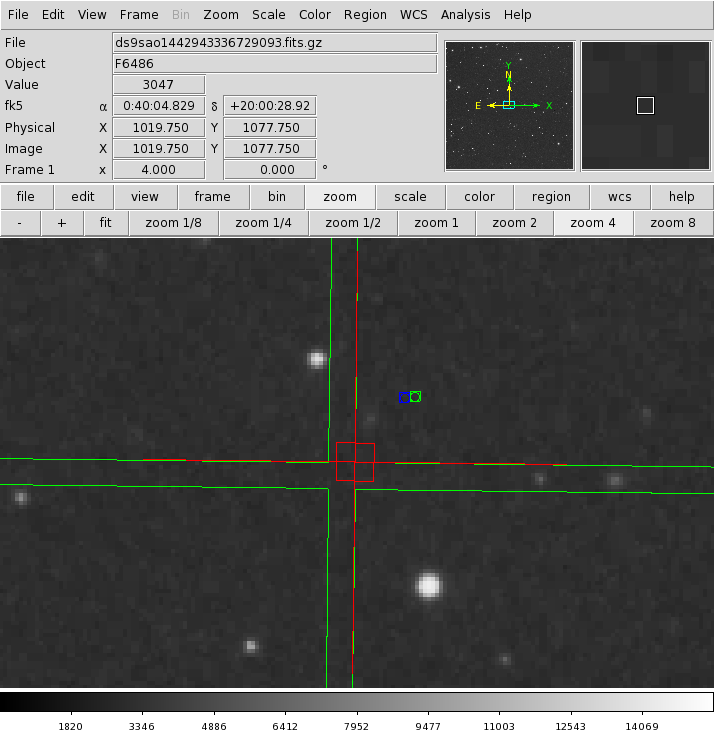

ObsVis is a tool to aid in observation planning which allows the inspection of sky images with overlaid instrument fields-of-view (FoV). ObsVis interfaces with the SAOimage DS9 image display tool, and facilitates detailed manipulation of Chandra pointing and instrument parameters.
Obsvis includes code to work with target offsets as specified by users, and to place targets on the detectors using those supplied offsets. To perform that mapping, obsvis uses an aimpoint in its calibration file specified in chip X and chip Y. In the following verification test, I've:
| Detector | Chip X | Chip Y | Y det offset (arcmin) | Z det offset (arcmin) | |
|---|---|---|---|---|---|
| POG Aimpoint | ACIS-I | 930.2 | 1009.6 | ||
| 6M aimpoint mon | ACIS-I | 935.8 | 996.9 | 0.104 | 0.046 |
| POG Aimpoint | ACIS-I | 200.7 | 476.9 | ||
| 6M aimpoint mon | ACIS-S | 218.5 | 483.9 | 0.146 | 0.057 |
In obsvis, with the calibration file set to use the POG aimpoint, offsets were manually determined to place the target at the corner of S3 as shown in the figure on the right
|
|
|
Then, the obsvis.cal file was updated with the new "6-month" aimpoint in ChipX, ChipY from the aimpoint_mon page.
Old Aimpoint in Obsvis Cal file < ACIS-S.instrumentcenter.coords.pixel "200.7, 476.9" New Aimpoint in Obsvis Cal file > ACIS-S.instrumentcenter.coords.pixel "218.5, 483.9"
New offsets were manually determined to place the target at the corner of S3 again.

|

|
| Using POG Aimpoint | Using '6-month' Aimpoint | Delta | |
|---|---|---|---|
| Y-Offset | 1.640 | 1.785 | +0.145 arcmin |
| Z-Offset | 3.905 | 3.965 | +0.060 arcmin |
In obsvis, with the calibration file set to use the POG aimpoint, offsets were manually determined to place the target at the inside corner of I3 as shown in the figure on the right
|  |
Then, the obsvis.cal file was updated with the new "6-month" aimpoint in ChipX, ChipY from the aimpoint_mon page.
Old Aimpoint in Obsvis Cal file < ACIS-I.instrumentcenter.coords.pixel "930.2, 1009.6" New Aimpoint in Obsvis Cal file > ACIS-I.instrumentcenter.coords.pixel "935.8, 996.9"

|
| Using POG Aimpoint | Using "6-month" Aimpoint | Delta | |
|---|---|---|---|
| Y-Offset | 0.120 | 0.220 | +0.100 arcmin |
| Z-Offset | -0.765 | -0.725 | +0.040 arcmin |
The calculated delta offsets from direct use of the proposed 6-month aimpoint in obsvis are very close to the proposed deltas already calculated and presented on the aimpoint page, and the signs appear correct. The "manually-determined" offsets are subject to some error in the manual alignment of the target on the edge of the chip.
| Obsvis manual determination | Aimpoint page values | |||
|---|---|---|---|---|
| Detector | Y-Off(arcmin) | Z-Off(arcmin) | Y-Off(arcmin) | Z-Off(arcmin) |
| ACIS-I | +0.100 | +0.040 | +0.104 | +0.046 |
| ACIS-S | +0.145 | +0.060 | +0.146 | +0.057 |